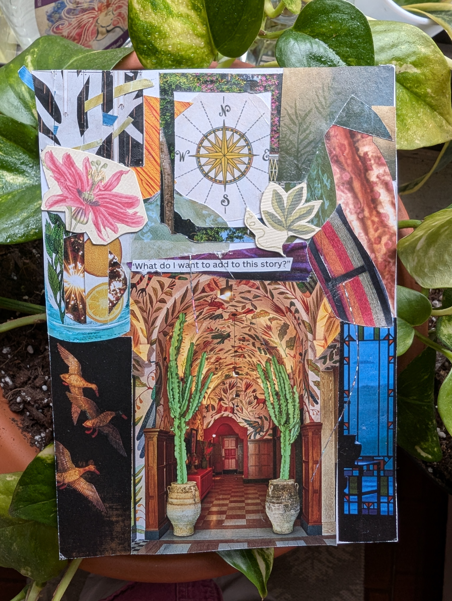
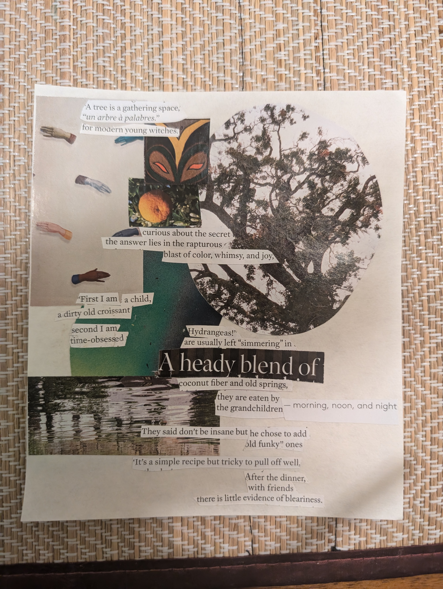
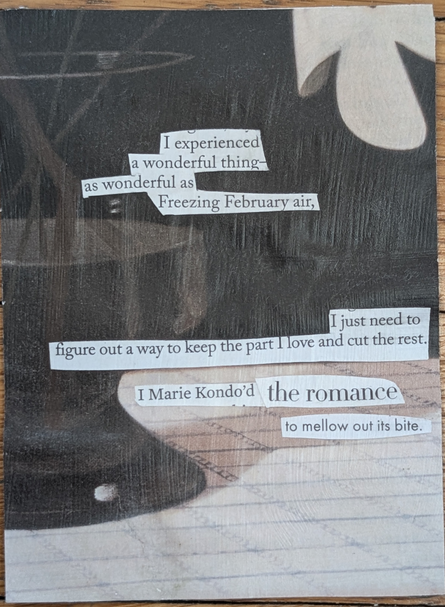

Below are a few examples of poetry collages I have created from 2024-2026. Since 2019 I have sourced material from fashion magazines, recipes, bank statements, and miscellaneous ephemera I've picked up from nature walks. I cut snippets from interview and short phrases from film and book reviews, too. I incorporate different elements: dried flowers, dye extracted from avocado pits, and paper infused with essential oils. Melding storytelling with humor and the uncanny, the autobiographical and the mundance these poem collages, for me, are forms of play and meditation.
 |  |
|  |